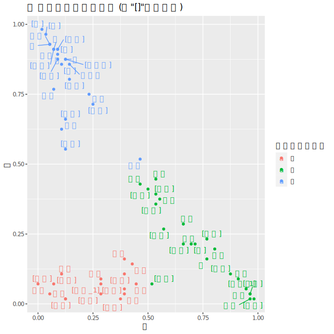
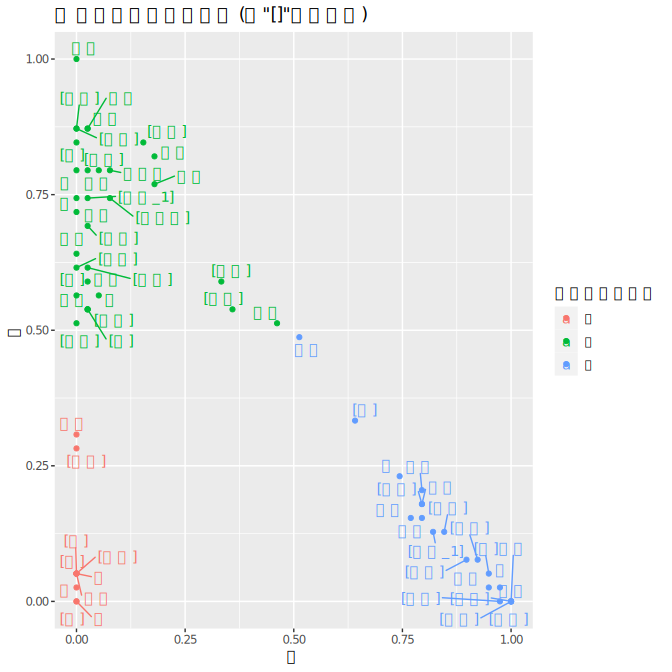

中文的量詞非常神奇，中文使用者似乎在大部分的情境下都能同意一個東西該用什麼量詞，但是要跟非中文母語使者解釋的時卻又講不出個所以然，特別是在性質非常類似的量詞（例如：條、根）更是難以解釋。
大家都覺得自己說的中文才是對的，但很多時候中文母語使用者也不能同意一些相似量詞使用的時機。造成這個分歧的原因有很多種可能：自幼的習慣、成長環境、對於同一個物品不同的想像、文字或是圖像的刺激⋯等。
於是我們想要知道中文使用者對於量詞的想像到底一不一致，並且了如果給予不同的刺激（圖像或是文字），是不是就會改變量詞的選擇？
方法
以下是用兩份 Google
問卷做問卷調查：一份問「雙對副」，一份問「條根支」。每份問卷有 30
個物品，各個物品又分為文字刺激與圖像刺激，請填問卷者看文字或圖片選出最直覺的量詞。
- 問卷一（雙、副、對）：鈕扣、刀叉、手套、眼鏡、拖鞋、骰子、耳環、手、手掌、角、鴛鴦、枕頭、翅膀、耳朵、肩膀、腳、筷子、眉毛、腿、鞋、靴子、高跟鞋、眼睛、情侶、夫妻、兒女、耳機、胳膊、鼓棒。
- 問卷二（條、根、支）：繩子、鞭子、辮子、鏈子、柱子、棍子、筷子、水管、魚刺、傘、菸、蠟燭、拐杖、電線桿、電線、火柴、香腸、頭髮、牙籤、針、筆、箭、線、弦、牙刷、草、骨頭、香蕉、毛線、腰帶。
兩份問卷各回收約 40 份回答。
結果
樣本不多所以沒什麼好做統計檢定的，直接看回應的比例分佈比較有趣。
問卷一（雙、副、對）

- 副跟雙的分野最明顯；副完全不包含身體部位；副的名詞有些甚至不能分開，與論文中強調的「整體性」很符合。
- 對的物件很多都不是「對稱」的，而是「一應一答」的形式。例如：有「鴛」就有「鴦」⋯等。這個特徵最主要就是這兩個東西不太成拆開來說，因為這樣應答的模式就消失了。這個特徵在越接近
100%
對的選擇的地方越明顯。上下的不少大家都覺得可以跟雙交換。身體部位則是散落在對跟雙之間。
- 雙在論文裡面描述是最廣泛的量詞，代表最弱的「二」個關係。可以看見的是雙具有最明顯的對稱性，所有雙的名詞都一定要是對稱的，這跟對跟副有很大的不同。
- 對於一些大家最有共識的物件來說，圖片跟文字的刺激沒有什麼很大的區別，例如眼鏡、夫妻、手⋯等。但是一些比較日常生活中比較少用的物件就有很明顯的
priming effect。
- 手掌：在看到文字的時候大家都選對，但是看到圖片的時候都選雙，推測是因為被「手要搭配雙」的想法影響，所以圖面的時候直接聯想到「手」，看到文字的時候反而覺得「手掌」有點怪怪的。
- 胳膊：是一個只會出現在課本上、台灣中文母語使用者鮮少使用的詞彙。所以大家在選擇的時候在雙跟對之間猜。依照上述的分類標準應該是都可以。
- 枕頭：這應該也是因為大學生大概不太會需要用到「雙對副」來形容枕頭，所以在對跟副之間做選擇。但是可以看到大家很明顯的不選雙，大概是因為大家認為枕頭應該是「對應的」、並且強調「整體」、也並非一定是「對稱」的，所以才在對跟副之間做選擇，符合上述分類標準。
問卷二（條、根、支）

- 條應該是三個兩詞中歧異最少的，可以看到大部分都是一些滿長、同時不能太硬的東西，所以這個應該是學中文最沒有問題的量詞吧？少數的歧異只有出現在「水管」跟「弦」，這個等一下處理。
- 支的選擇比較尷尬，因為有些很 iconic
的東西大家一定不會選錯，但是有不少根的東西大家也覺得支好像也可以，這代表這兩者應該在語義上有不少相似性。支最主要的特徵就是要「細長硬」的物體，而跟根有重複到的部分就是「硬」至個特徵。
- 根在論文上的描述主要有兩種特徵：一個是有「根基」的概念；另一個是與「材質」有關。而在我們圖上也可以看得出來這些物件大多都是「實心、扎實」的東西，這與支的物件有很大的不同。但是如果把一些根的物件「縮小」的話，可以看得出來有網支的方向走的趨勢。
- 大部分人對於「條根支」的選擇也是滿有共識的，很 iconic
的物件當然不用說，但是我們有看到一些滿顯著文字與圖片選擇不同的例子。
- 拐杖：在論文裡面拐杖幾乎是無異議的要用根，但是可以看到文字跟圖片的選擇有不少差異。我們給的拐杖的圖面是醫療用的拐杖，所以跟大家一般想像「木頭做的拐杖」有不少差異，這就導致根的主要特徵「實心、扎實」被違背了，所有就朝向支的方向移動。
- 香腸：我很意外沒有什麼人選「一支香腸」，我想如果圖片是給那種竹籤上的香腸的話大家會選一支。
- 香蕉：我不知道為什麼大家看到香蕉的圖片之後會往條的方向選…。
- 弦：只看字的時候大家覺得應該要用條，但是看到圖片的時候就覺得用根好像也是滿合理的。原因我想是因為大多數人並不是很常接觸「弦」，所以只看字的時候就覺得弦應該是一條軟軟的東西。但是看到裝在古箏上的弦的時候就覺得「歐歐
弦應該是蠻硬的」，又知道弦應該是一個實心請滿扎實的東西，所以往根那邊靠攏。
- 水管：這是整個做出來差別最明顯的的一個物件。在看文字的時候大家選根跟條差不多一半一半，但是看到水管的圖片的時候（圖中是一條軟的橡膠水管）就一面倒的選條。這顯示了其實中文使用者在選擇量詞的時候並不是只看文字，而是必須要把量詞跟心中對於該物件的想像媒合。所以不能告訴外國人說「歐歐
水管就是用條啊」，而是被須解釋說量詞的使用時機要看不同的情境而定。
結論
- 絕大多數的量詞大家都能夠同意，並且對於一些非常 iconic
的物件沒有任何歧義。（例如：骨頭、眼鏡、手）幾乎所有的結果都與論文裡面的描述的一致。
- 有些東西被圖片影響得很明顯，顯示出中文使用者在選擇量詞時，不只是考慮到「詞」本身而已，還與一個人對於該物品的想像有很大的關係。
因為這個只是某堂課的報告，所以沒有很嚴謹請見諒。